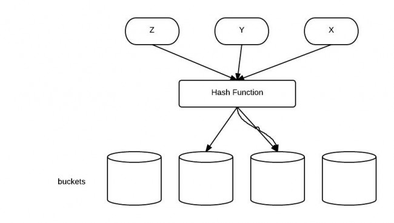

String
字符串不变性
String是所有语言中最常用的一个类。我们知道在Java中，String是不可变的、final的。
Java在运行时也保存了一个字符串池(String pool)，这使得String成为了一个特别的类。
String Immutability。对于下面的代码：
String s = "abde";
s = s.concat("ef");

不可变性的优点
String类不可变性的好处：
-
只有当字符串是不可变的，字符串池才有可能实现。字符串池的实现可以在运行时节约
很多heap空间，因为不同的字符串变量都指向池中的同一个字符串。但如果字符串是
可变的，那么String interning将不能实现(译者注：String interning是指对不同的
字符串仅仅只保存一个，即不会保存多个相同的字符串。)，因为这样的话，如果
变量改变了它的值，那么其它指向这个值的变量的值也会一起改变。
-
如果字符串是可变的，那么会引起很严重的安全问题。譬如，数据库的用户名、密码都是
以字符串的形式传入来获得数据库的连接，或者在socket编程中，主机名和端口都是以
字符串的形式传入。因为字符串是不可变的，所以它的值是不可改变的，否则黑客们可以
钻到空子，改变字符串指向的对象的值，造成安全漏洞。
-
因为字符串是不可变的，所以是多线程安全的，同一个字符串实例可以被多个线程共享。
这样便不用因为线程安全问题而使用同步。字符串自己便是线程安全的。
-
类加载器要用到字符串，不可变性提供了安全性，以便正确的类被加载。譬如你想加载
java.sql.Connection类，而这个值被改成了myhacked.Connection，那么会对你的
数据库造成不可知的破坏。
-
因为字符串是不可变的，所以在它创建的时候hashcode就被缓存了，不需要重新计算。
这就使得字符串很适合作为Map中的键，字符串的处理速度要快过其它的键对象。这就是
HashMap中的键往往都使用字符串。
以上就是我总结的字符串不可变性的好处。